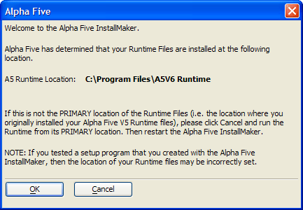
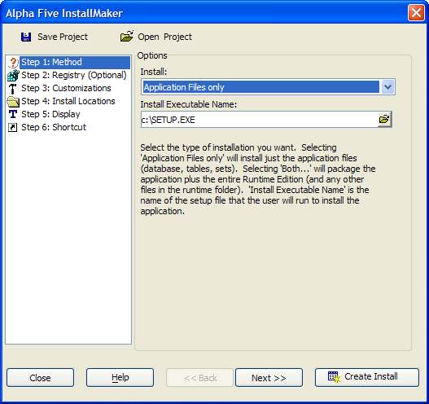
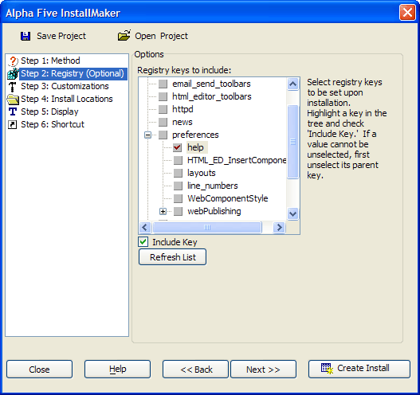
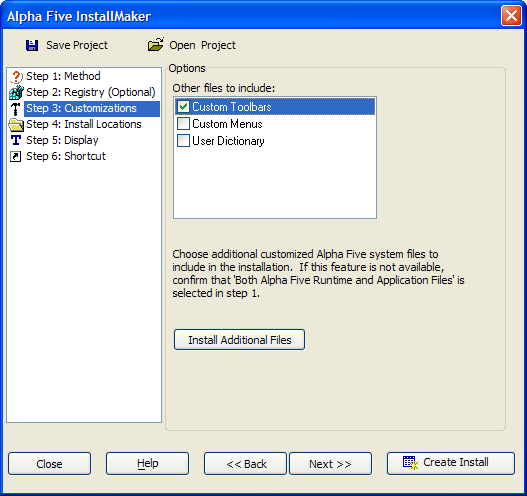
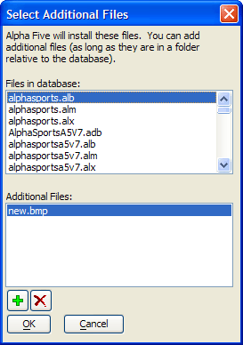
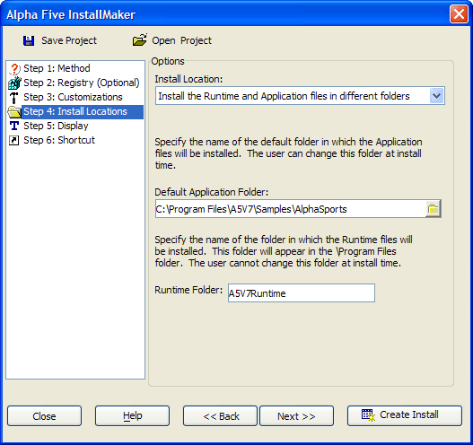
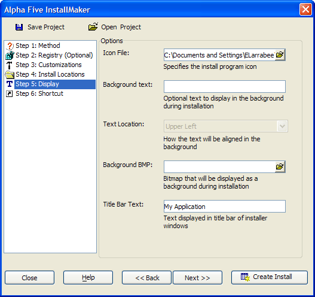
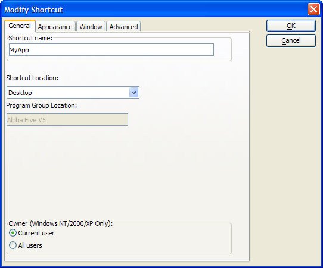
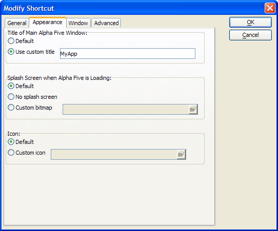
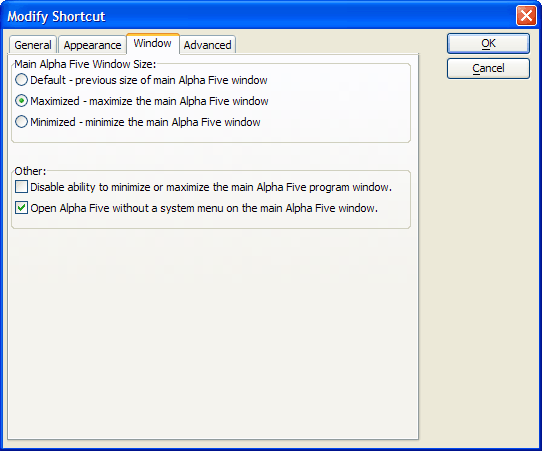

Using InstallMaker to Build Installation Packages
NOTE: InstallMaker is not available in V12 and above.
The InstallMaker utility creates a package that will install your Alpha Five Runtime application at your customer's site. To use this utility:
Run your new application with Alpha Five Runtime.
Exit from the Alpha Five Runtime application.
Run your new application with the Alpha Five development software.
From the Control Panel, select Tools > Utilities > Create Install Package.
The first screen of the InstallMaker will identify the location of your Alpha Five Runtime application.
Click OK to continue.

Open an Existing Project
Optionally, click Open Project to display the Open InstallMaker Project dialog. Select the project from the list and click OK to continue.
Step 1: Method
Make a selection from the Install list. The options are:
"Application Files only" - appropriate for an update of an existing application
"Both Alpha Five Runtime and application files" - appropriate for a new installation
Define the name of the installation program, which is by default " c:\setup.exe ".
Click Next >>.

Step 2: Registry
In the Options list, place checkmarks next to the registry keys that you want to set upon installation. To place a checkmark, select the desired key and select the Include Key check box.
Click Next >>.

Step 3: Customizations
If you selected Both Alpha Five Runtime and application files" in step 7, the Other files to include list will be enabled.
Place checkmarks next to the files to include.

If there are additional files to include (such as images):
Click Install Additional Files to display the Select Additional Files dialog box.
Click
 to navigate to and select a file to add. This file must be
in the application's folder or in a sub-folder.
to navigate to and select a file to add. This file must be
in the application's folder or in a sub-folder.To remove a file, select it in the Additional Files list and click .
Click OK to continue.
Click Next >>.

Step 4: Install Locations
Make a selection in the Install Location list. The options are:
"Install the Runtime and Application files in the same folder"
"Install the Runtime and Application files in different folders"
Enter the location of the application files in the Default Application Folder field.
If you selected "Install the Runtime and Application files in different folders" in step 14, enter the installation location of the Alpha Five Runtime software in the Runtime Folder field.
Click Next >>.

Step 5: Display
Optionally, click
 in the Icon File field to
select the icon image that you want to associate with your application.
in the Icon File field to
select the icon image that you want to associate with your application.Optionally, enter text to display in the background during installation into the Background text field.
If you entered background text, select the where the text should be displayed from the Text Location list. The options are:
"Upper Left"
"Upper Right"
"Lower Left"
"Lower Right"
"Top Center"
"Bottom Center"
Optionally, click
in the Background BMP field
to select an image to display in the background during installation.Enter the text to display in the title bar of the installer into the Title Bar Text field.
Click Next >>.

Save the Project
Optionally, click Save Project to display the Save InstallMaker Project dialog. Enter a name for the project and click OK.
Step 6: Shortcut
Click Modify Shortcut.
On the General tab enter the name that will be attached to the shortcut in the Shortcut name field.
Select the location for the shortcut. The options are:
"None"
"Custom Group"
"Desktop"
"Start Menu"
"Startup Folder"
If the target computer is running Windows NT, Windows 2000, or Windows XP, in the Owner field select whether the program will be available to the Current user or All users.

On the Appearance tab select whether the main Alpha Five window will have a custom title. If so, enter the title in the Use custom title field.
When loading, select whether Alpha Five will use:
its Default splash screen
No splash screen
a Custom bitmap
If you selected "Custom bitmap", click
in the Custom
bitmap field to select an image to display when Alpha Five is loading.When loading, select whether Alpha Five will use:
its Default icon
Custom icon
If you selected "Custom icon", click
in the Custom icon
field to select an icon to display when Alpha Five is loading.

On the Window tab select the size of the main Alpha Five window. The options are:
Default - previous size of main Alpha Five window
Maximized - maximize the main Alpha Five window
Minimized - minimize the main Alpha Five window
Select whether to disable the ability to minimize or maximize the main Alpha Five program window.
Select whether to open Alpha Five without a system menu.
On the Advanced tab, enter Xbasic commands to run when Alpha Five is started.
Click OK to continue.

Click Create Install. InstallMaker will create a self extracting ZIP file named (by default) setup.exe. This name was defined on the first page of the InstallMaker utility.
See Also
How to Distribute a Runtime Application